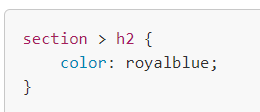
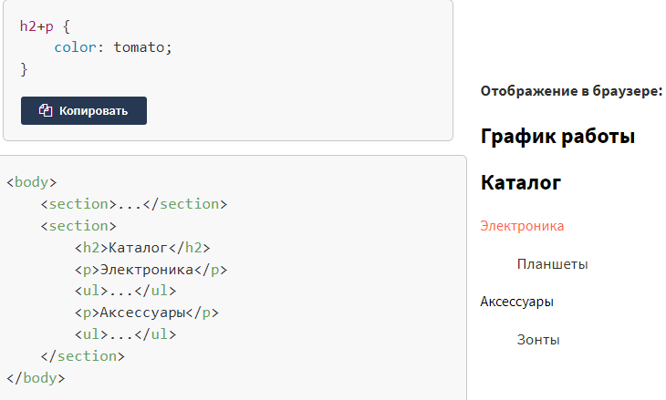
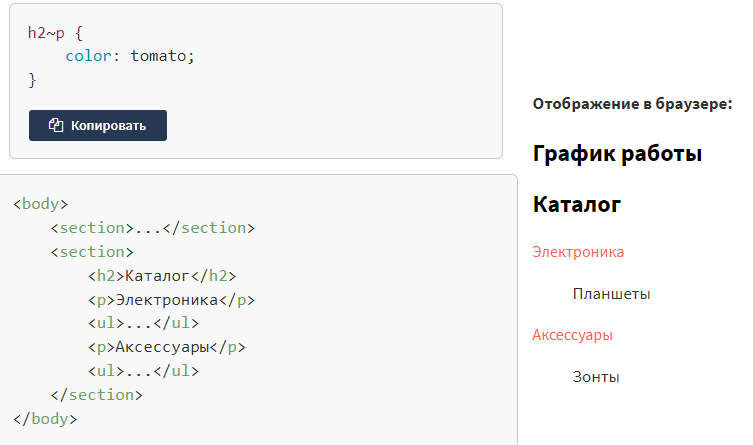
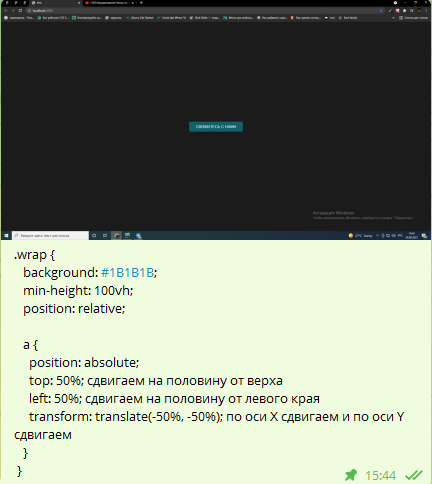

Ответы на вопросы на собеседование Основы HTML
https://jsehelper.blogspot.com/2016/01/html.html- Что такое HTML?
- HTML(HyperТext Markup Language, HTML) - это язык разметки. Вы используете HTML для разметки текстового документа.
- Что такое DOCTYPE и зачем он нужен?
- DOCTYPE - это определение типа документа (Document Type Definition (DTD)), правила, в соответствии с которыми осуществляется проверка конкретного документа (веб-страницы) XML или (X)HTML.
- Чем отличается div от span?
- div - это блочный контейнер, а span - линейный.
- Как обозначаются комментарии в HTML?
- <!-- вот так-->
- Что такое атрибут?
- Атрибуты задают элементам дополнительные свойства и расширяют возможности
- У каких атрибутов отсутствует значение?
- Логический атрибут
- Какой атрибут позволяет создавать свои атрибуты для хранения произвольной информации?
- data-*
- Группировка данных формы
- пример:
- Ссылки. Как задать адрес документа, на который следует перейти?
-
<a href="https://jsehelper.blogspot.com/example/example.html">
Абсолютная ссылка</a>
<a href="../../example/example.html">
Относительная ссылка>/a> - Как сделать сcылку на имейл?
- <a href="mailto:testmail@mail.com">E-mail me</a>
- Что делают теги <em></em> ?
- Выводят заключенный в них текст курсивом.
- Что пишут в теге HEAD?
-
- Тег title Это очень важный тег, особенно с точки зрения SEO. Как он прописывается? С помощью тегов <title></title>. То есть получается примерно так: <title>Название вашего веб-документа</title>;
- Мета-теги. Мета теги, в основном, нужны для трёх вещей: прописать кодировку, description (описание) и keywords (ключевые слова).
- Также внутри тегов head прописывается путь к таблице стилей, так связывается веб-страница и таблица стилей, или CSS пишется прямо на странице, внутри тегов style
- Внутри тега head подключаются всевозможные скрипты. Как они подключаются? Прописываются теги script с указанием типа языка и внутри них или пишется код скрипта, или к тегу script прописывается атрибут src, в котором указывается путь к скрипту.
- Зачем нужны теги <dl>,<dt>,<dd>?
-
Теги <dl>,<dt>,<dd> предназначенны для создания списка определений.
пример:
<dl>контейнер писка</dl>
<dt>заголовок опредиления<dt>
<dt>опредиление<dt> - В каком регистре лучше писать HTML-код?
- пишем в нижнем регистре.
- Обязательно ли писать alt в <img>?
- Да.
Ответы на вопросы на собеседование Основы CSS.
https://jsehelper.blogspot.com/2016/01/css.html- Что такое CSS?
- Cascading Style Sheets(CSS) - каскадные таблицы стилей
- ЧТо такое переменные в браузере?
-
Переменные — это контейнер для хранения информации
пример;
let message;
message = 'Hello!';
alert(message); // показывает содержимое переменной - Фиксируванная верстка
- это масштабируемая верстка
- Дочерний селектор (element>element)
-
Дочерний селектор позволяет использовать стили только когда дочерние элементы следуют сразу за родительским,
 - Соседний (сестринский) селектор (element+element)
-
Селекторы соседних элементов позволяют выбрать элементы из группы элементов одного уровня.
Общий селектор сестринских элементов нужен для выбора всех элементов, которые находятся на этом же уровне вложенности
 - Гиперссылки
-
Атрибут target определяет, где показать содержимое после перехода по ссылке. Атрибут target принимает такие значения:
- _self загружает документ в текущей вкладке. Является значением по умолчанию.
- _blank загружает документ в новой вкладке.
- _parent загружает документ в родительской вкладке.
- _top в HTML5 загружает в окне высшего уровня. Если родителя нет, ведёт себя как _self.
- отзывчивая(резиновая) верстка
- ширина задается в процентах, верстка подстраиваеться под размер экрана
- адаптивная верстка
-
используються брейкпоинты которые срабатывают на заданих размерах
пример:
@media (max-width: 1024px)
@media (max-width: 768px)
@media (max-width: 767px) - В чем разница между записью #my и .my?
-
#my - селектор ай-ди.
пример;
id="wrapper"
.my - селектор класса.
пример;
class="question"
- В чем разница между margin и padding?
- margin - внешний отступ (снаружи от границ блока до остальных элементов страницы); padding - внутренний отступ (внутри от границ блока до контента).
- Почему таблицы стилей CSS называются каскадными?
- иерархия стилей
- Что такое альтернативная таблица стилей?
- Альтернативная таблица стилей - это таблица, определяющая стили, которые будут использованы взамен стилей, использующихся по умолчанию. Например, пользователь может сделать выбор, в зависимости от своих предпочтений, если мы заранее подготовим одну таблицу стилей для маленького экрана, а другую – для слабовидящих (с крупными шрифтами). Альтернативные стили позволяют пользователю сделать выбор наиболее подходящего из них.
- Какая разница между значениями 0 и auto в свойстве margin?
- В вертикальных полях, auto всегда означает 0. В горизонтальных полях, auto означает 0 только тогда, если свойство width также auto.
- Для чего применяются свойства border-position и border-all?
- Таких свойств в CSS нет.
- Как в CSS обозначаются комментарии?
- /* вот так */
- Что делает свойство clear?
- Устанавливает, с какой стороны элемента запрещено его обтекание другими элементами. Если задано обтекание элемента с помощью свойства float, то clear отменяет его действие для указанных сторони.
- Что такое DOM?
- DOM (Document Object Model, объектная модель документа) — это дерево элемента. Этот интерфейс позволяет воздействовать на документ из скриптов, меняя его оформление, стили, содержимое. В DOM документ представлен в виде дерева узлов.
- Какие бывают значения display? Расскажите как ведёт себя каждое свойство.
-
-
block
Элемент показывается как блочный.
-
inline
Элемент отображается как строчный.
-
inline-block
Это значение генерирует блочный элемент
-
inline-table
Определяет, что элемент является таблицей, как при использовании <table>, но при этом таблица является строчным элементом и происходит её обтекание другими элементами, например, текстом.
-
inline-flex
Элемент ведёт себя как строчный и выкладывает содержимое согласно флекс-модели.
-
flex
Элемент ведёт себя как блочный и выкладывает содержимое согласно флекс-модели.
-
list-item
Элемент выводится как блочный и добавляется маркер списка.
-
table
Определяет, что элемент является блочной таблицей, подобно использованию <table>.
-
- Что вы знаете о весе селекторов? Каковы значения веса?
-
Вес селекторов (по убыванию):
style=""
#id
.class
[attr=value]
LI
* - Какие бывают значения у свойства position? Расскажите как ведёт себя каждое свойство.
-
-
absolute
Абсолютное позиционирование. Указывает, что элемент абсолютно позиционирован, при этом другие элементы отображаются на веб-странице словно абсолютно позиционированного элемента и нет.
-
fixed
Фиксированное позиционирование. По своему действию это значение близко к absolute, но в отличие от него привязывается к указанной свойствами left, top, right и bottom точке на экране и не меняет своего положения при прокрутке веб-страницы.
-
relative
Относительное позиционирование. Положение элемента устанавливается относительно его исходного места. Добавление свойств left, top, right и bottom изменяет позицию элемента и сдвигает его в ту или иную сторону от первоначального расположения.
-
static
Статичное позиционирование.
-
sticky
Это сочетание относительного и фиксированного позиционирования. Элемент рассматривается как позиционированный относительно, пока он не пересекает определённый порог, после чего рассматривается как фиксированный.
-
- Что такое float?
- Определяет, по какой стороне будет выравниваться элемент, при этом остальные элементы будут обтекать его с других сторон.
- Что такое clearfix? Из чего он состоит и для чего он?
-
Это способ борьбы с проблемой контейнера нулевой высоты для плавающих элементов
пример:
.clearfix:after {
content: "";
clear: both;
display: block; - Из чего строится размер элемента?
- box-sizing: content-boxОсновывается на стандартах CSS, при этом свойства width и height задают ширину и высоту содержимого и не включают в себя значения margin, padding и border. box-sizing: border-box Свойства width и height включают в себя значения padding и border, но не margin.
- Псевдоклассы
-
-
:active
используется преимущественно для ссылок.
-
:link
Применяется к непосещенным ссылкам
-
:focus
курсор установлен в поле, и с помощью клавиатуры можно вводить в него текст
-
:visited
применяется к посещённым ссылкам.
-
:hover
работает при наведении
-
:not
задаёт правила стилей для элементов, которые не содержат указанный селектор.
input:not([type="submit"]) {
border: 1px solid #ccc;
padding: 3px; }
-
- Псевэлемент
-
для оформления
-
::after
добавляет контент после элеммента
-
::before
добавляет контент до элеммента
-
::first-letter
оформление первого символа
-
::first-line
оформление первой строки текста
-
::selection
::selection — позволяет установить цвет и фон для текста, который выделен пользователем.
-
- Что такое семантика
- Семантическая вёрстка — смысловое предназначение каждого блока и логическую структуру документа
- Что такое блочная модель CSS?
- Модуль CSS Box Model описывает свойства padding и margin, которые создают поля внутри и отступы снаружи CSS блока. Размеры блока также могут быть увеличены за счет рамки. Каждый блок имеет прямоугольную область содержимого в центре, поля вокруг содержимого, рамку вокруг полей и отступ за пределами рамки.
- Как ведут себя margin у двух элементов по соседству?
-
наблюдается эффект схлопывания,
когда отступы не суммируются, а объединяются между собой при этом примыкающие отступы комбинируются в один.
Для отступов слева и справа схлопывание никогда не применяется.
Схлопывание не срабатывает:
- для элементов, у которых на стороне схлопывания задано свойство padding.
- для элементов, у которых на стороне схлопывания задана граница; на элементах с абсолютным позиционированием, т. е. таких, у которых position установлено как absolute;
- на плавающих элементах (для них свойство float задано как left или right);
- для строчных элементов;
- для <html>.
- Есть ли у тегов предопределённые стили?
- Есть, у input.
- Как повлиять на вертикальное выравнивание строчного элемента?
-
vertical-align
vertical-align: baseline|bottom|middle|sub|super|text-bottom|text-top|top| - Как браузер «читает» css?
- Делает он это сверху вниз, проходясь последовательно по каждой строчке.
- Что такое наследование стилей?
- значения свойств элемента-родителя передаются его элементам-потомкам.
- Как отцентровать элемент по горизонтали не зная ширину родительского блока?
- margin: 0 auto?, text-align: center, flex, justify-content: center
- Как отцентровать элемент по вертикали не зная высоту родительского блока? Перечислите все известные вам методы.
-
позиционирование:
tranform:
flexbox:

- Какие бывают значения у свойства background-size? Расскажите о каждом из них.
-
-
auto
Если задано одновременно для ширины и высоты (auto auto), размеры фона остаются исходными; если только для одной стороны картинки (100px auto), то размер вычисляется автоматически исходя из пропорций картинки
-
cover
Масштабирует изображение с сохранением пропорций так, чтобы его ширина или высота равнялась ширине или высоте блока.
-
contain
Масштабирует изображение с сохранением пропорций таким образом, чтобы картинка целиком поместилась внутрь блока.
-
- Что такое БЭМ?
- БЭМ (Блок, Элемент, Модификатор) — принцип разделения интерфейса на независимые блоки. Он позволяет легко и быстро разрабатывать интерфейсы любой сложности и повторно использовать существующий код
- Какие из инструментов сборки вам знакомы?
- Gulp, GitLab
- Какие из препроцессоров вы знаете?
- sass(scss), less
- Что такое размер viewport?
- Мобильные браузеры отображают страницы в виртуальном «окне» (viewport, вьюпорт)
- Разницу между псевдоклассом и псевдоэлементом?
- Ключевое отличие между ними в том, что псевдоклассы определяют именно состояние элементов, которые уже существуют на странице, а псевдоэлементы создают области (искусственные элементы), которых изначально на веб-странице не было.
- Как выбрать другие селекторы?
-
Дочерний селектор (element>element)
Соседний (сестринский) селектор (element+element)
Селектор атрибута
[class] {
color: blueviolet; } - Что такое ретинизация?
- Корректное отображение элементов на ретина экранах.
- Что такое SVG?
- Scalable Vector Graphics — масштабируемая векторная графика.
- Какие вы знаете способы подключения шрифтов к странице?
- Ссылкой, инлайново в стилях.
- Что такое JQuery?
- jQuery — библиотека JavaScript, фокусирующаяся на взаимодействии JavaScript и HTML.
- Что такое npm?
- Пакетный менеджер node.js
- Зачем нам обычно файл package.json?
- Установленные плагины.
- Что такое git?
- Управление версиями.
- Как посмотреть все ветки в вашем проекте?
- git branch - с которыми работаем git branch -a - все существующие ветви
- Как посмотреть текущее состояние ветки?
- git status
- Что такое commit?
- Запись изменений в репозиторий.
- Какие подходы в верстке вам известны (float, flex, grid, etc.)?
- https://tpverstak.ru/float-flex-grid-css/
- Как упростить написание кросс-браузерных стилей?
- https://www.internet-technologies.ru/articles/aktualnye-sovety-po-kross-brauzernoy-verstke.html
- Что такое CSS-препроцессоры?
- CSS препроцессор (CSS preprocessor) - это программа, которая имеет свой собственный синтаксис но может сгенерировать из него CSS код .
- Объясните разницу между единицами измерения px, em, rem.
- https://learn.javascript.ru/css-units
- Как работает CSS Grid?
- https://developer.mozilla.org/ru/docs/Web/CSS/CSS_Grid_Layout/Basic_Concepts_of_Grid_Layout Grid представляет собой пересекающийся набор горизонтальных и вертикальных линий - один набор определяет столбцы, а другой строки.
- Чем отличается элемент от тега?
- Элемент — это набор из тегов и содержания.
- CSS Flexbox
- CSS Flexbox — это технология для создания сложных гибких макетов за счёт правильного размещения элементов на странице
- flex-grow
- управляет свободным пространством у родительського блока
- flex-basis
-
CSS свойство flex-basis задаёт базовый размер флекс элемента по основной оси. Это свойство определяет размер контент-бокса, если не задано иначе через box-sizing.
Внимание: в случае, если для элемента одновременно заданы flex-basis (отличное от auto) и width ( или height в случае flex-direction: column), flex-basis имеет приоритет. - flex-grow
- управляет свободным пространством у родительського блока
Ответы на вопросы на собеседование Основы WEB.
https://jsehelper.blogspot.com/2016/01/web.html- Что такое www?
- Всемирная паутина (сокращенно World Wide Web или WWW) - это единство информационных ресурсов, которые связаны между собой средствами телекоммуникаций по всему миру.
- Что такое w3c?
- W3C - абревиатура, которая обозначает Консорциум мировой сети (World Wide Web Consortium), организацию, цель которой - разработка и внедрение единых стандартов работы Интернета.
- Что такое URI?
- URI, Uniform Resource Identifier (унифицированный идентификатор ресурса) - последовательность символов, идентифицирующая физический или абстрактный ресурс, который не обязательно должен быть доступен через сеть Интернет, причем, тип ресурса, к которому будет получен доступ, определяется контекстом и/или механизмом. Как правило делится на URL и URN, поэтому URL и URN это составляющие URI.
- Что такое URL?
- URL, Uniform Resource Locator (единообразный локатор (определитель местонахождения) ресурса).
- Что такое URN?
- URN, Unifrorm Resource Name (унифицированное имя ресурса) - является уникальным именем объекта.
- Что такое интернет протокол IP?
- Интернет протокол (Internet Protocol, IP) - протокол сетевого уровня сетевой модели OSI
- Что такое FTP?
- FTP (File Transfer Protocol - протокол передачи файлов) - стандартный протокол, предназначенный для передачи файлов
- Чем отличаются HTTP и HTTPS?
- HTTP (HyperText Transfer Protocol - "протокол передачи гипертекста") - протокол прикладного уровня передачи данных (изначально - в виде гипертекстовых документов в формате HTML).
- Что такое протокол передачи данных, какие вы знаете?
-
- HTTP (Hyper Text Transfer Protocol)- это протокол передачи гипертекста.
- FTP (File Transfer Protocol)- это протокол передачи файлов со специального файлового сервера на компьютер пользователя.
- POP (Post Office Protocol)- это стандартный протокол почтового соединения.
- SMTP (Simple Mail Transfer Protocol)- протокол, который задает набор правил для передачи почты.
- Что такое web server?
- Веб-приложение - клиент-серверное приложение, в котором клиентом выступает браузер, а сервером - веб-сервер.
- Дайте определение понятиям "авторизация" и "аутентификация", в чем их различия?
- Аутентификация- это проверка соответствия субъекта и того, за кого он пытается себя выдать, в простейшем случае - с помощью имени входа и пароля.